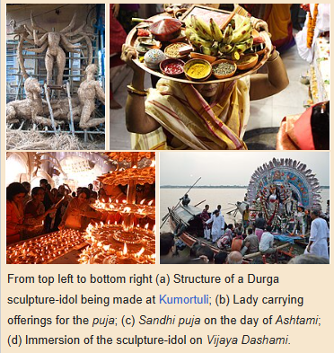
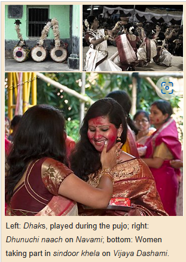

Rituals and Practices


Durga Puja is a ten-day event, of which the last five days involve certain rituals and practices. The festival begins with Mahalaya,
a day on which Hindus perform tarpaṇa by offering water and food to their dead ancestors. The day also marks the advent of Durga from
her mythological marital home in Kailash. The next significant day of the festival is the sixth day (Sashthi), on which devotees
welcomes the goddess and festive celebrations are inaugurated. On the seventh day (Saptami), eighth (Ashtami) and ninth (Navami) days,
the goddess along with Lakshmi, Saraswati, Ganesha, and Kartikeya are revered and these days mark the main days of worship with
recitation of scriptures, puja, legends of Durga in Devi Mahatmya, social visits to elaborately decorated and illuminated pandals
(temporary structures meant for hosting the puja), among others.
Durga Puja is, in part, a post-monsoon harvest festival observed on the same days in the Shaktism tradition of Hinduism as those in its
other traditions. The practice of including a bundle of nine different plants, called navapatrika, as a symbolism of Durga, is a
testament practice to its agricultural importance. The typically selected plants include not only representative important crops,
but also non-crops. This probably signifies the Hindu belief that the goddess is "not merely the power inherent in the growth of crops
but the power inherent in all vegetation". The festival is a social and public event in the eastern and northeastern states of India,
where it dominates religious and socio-cultural life, with temporary pandals built at community squares, roadside shrines, and temples.
The festival is also observed by some Shakta Hindus as a private home-based festival. The festival starts at twilight with prayers to
Saraswati. She is believed to be another aspect of goddess Durga, and who is the external and internal activity of all existence, in
everything and everywhere. This is typically also the day on which the eyes of the deities on the representative clay sculpture-idols
are painted, bringing them to a lifelike appearance. The day also marks prayers to Ganesha and visit to pandals temples. Day two to five
mark the remembrance of the goddess and her manifestations, such as Kumari (goddess of fertility), Mai (mother), Ajima (grandmother),
Lakshmi (goddess of wealth) and in some regions as the Saptamatrikas (seven mothers) or Navadurga (nine aspects of Durga).
On the sixth day major festivities and social celebrations start. The first nine days overlap with Navaratri festivities in other
traditions of Hinduism. The puja rituals involve mantras (words manifesting spiritual transformation), shlokas (holy verses), chants
and arati, and offerings. These also include Vedic chants and recitations of the Devi Mahatmya text in Sanskrit. The shlokas and
mantras praise the divinity of the goddess; according to the shlokas Durga is omnipresent as the embodiment of power, nourishment,
memory, forbearance, faith, forgiveness, intellect, wealth, emotions, desires, beauty, satisfaction, righteousness, fulfillment and
peace. The specific practices vary by region.
The rituals before the puja begins include the following:
-
Paata Puja: The process of making an idol usually begins with 'Paata Puja', on the day of the Rath Yatra that usually takes
place around July. 'Paata' is the wooden frame that forms the base for the idols.
-
Bodhana: Involves rites to awaken and welcome the goddess to be a guest, typically done on the sixth day of the festival.
The amorphous sight of the goddess is consecrated into a ghata or noggin while the visible sight is consecrated into the murti
or idol. These rituals are known as ghatasthapana and pranapratistha respectively.
-
Adhivasa: Anointing ritual wherein symbolic offerings are made to Durga, with each item representing a remembrance of subtle
forms of her. Typically completed on the sixth day as well.
- Navapatrika snan: Bathing of the navapatrika with holy water done on the seventh day of the festival.
-
Sandhi puja and Ashtami pushpanjali: The eighth day begins with elaborate pushpanjali rituals. The cusp of the ending of the
eighth day and beginning of the ninth day is considered to be the moment when per scriptures Durga engaged in a fierce battle
against Mahishasura and was attacked by the demons Chanda and Munda. Goddess Chamunda emerged from the third eye of Durga and
killed Chanda and Munda at the cusp of Ashtami and Navami, the eighth and ninth days respectively. This moment is marked by
the sandhi puja, involving the offering of 108 lotuses and lighting if 108 lamps. It is a forty-eight minutes long ritual
commemorating the climax of battle. The rituals are performed in the last 24 minutes of Ashtami and the first 24 minutes of
Navami. In some regions, devotees sacrifice an animal such as a buffalo or goat, but in many regions, there isn't an actual
animal sacrifice and a symbolic sacrifice substitutes it. The surrogate effigy is smeared in red vermilion to symbolize the
blood spilled. The goddess is then offered food (bhog). Some places also engage in devotional service.
-
Homa and bhog: The ninth day of festival is marked with the homa (fire oblation) rituals and bhog. Some places also perform
kumari puja on this day.
-
Sindoor khela and immersion: The tenth and last day, called Vijaya dashami is marked by sindoor khela, where women smear
sindoor or vermillion on the sculpture-idols and also smear each other with it. This ritual signifies the wishing of a
blissful marital life for married women. Historically the ritual has been restricted to married women. The tenth day is the
day when Durga emerged victorious against Mahishasura and it ends with a procession where the clay sculpture-idols are
ceremoniously taken to a river or coast for immersion rites. Following the immersion, Durga is believed to return to her
mythological marital home of Kailasha to Shiva and the cosmos in general. People distribute sweets and gifts, visit their
friends and family members on the tenth day. Some communities such as those near Varanasi mark the day after Vijaya dashami,
called Ekadashi, by visiting a Durga temple.
-
Dhunuchi naach and dhuno pora: Dhunuchi naach involves a dance ritual performed with dhunuchi (incense burner). Drummers called
dhakis, carrying large leather-strung Dhaks, Dhols and other traditional drums depending on the region, to create music, to
which people dance either during or not during aarati. Some places, especially home pujas, also observe dhuno pora, a ritual
involving married women carrying dhunuchis burning with incense and dried coconuts, on a cloth on their head and hands.
For more information click the following links: